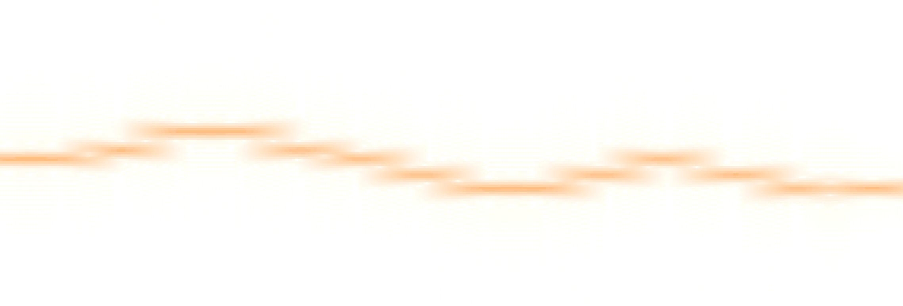
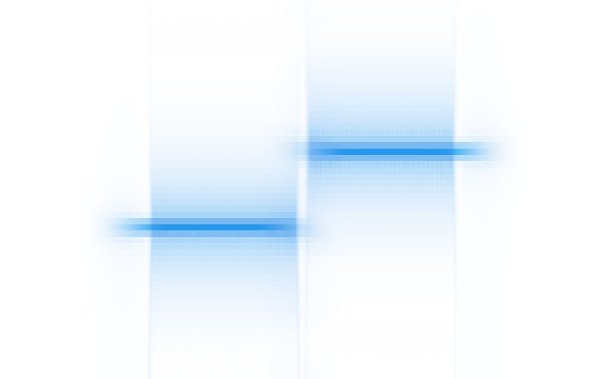
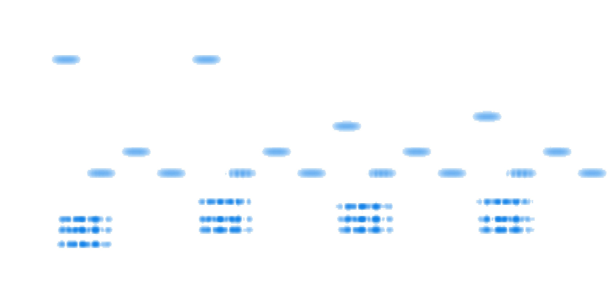

\(
\newcommand{\tc}{\: : \:}
\newcommand{\spR}{\mathbb{R}}
\newcommand{\spC}{\mathbb{C}}
\newcommand{\spZ}{\mathbb{Z}}
\newcommand{\spNa}{\mathbb{N}}
\newcommand{\spLd}{L^1(\mathbb{R}^d)}
\newcommand{\spLLd}{L^2(\mathbb{R}^d)}
\newcommand{\spLdd}{L^1(\mathbb{R}^{2d})}
\newcommand{\spLLdd}{L^2(\mathbb{R}^{2d})}
\newcommand{\intRd}{\int_{\spR^d}}
\newcommand{\intRdd}{\int_{\spR^{2d}}}
\newcommand{\norma}[1]{\Vert #1 \Vert}
\newcommand{\normaL}[1]{\Vert #1 \Vert_{L^1}}
\newcommand{\normaLL}[1]{\Vert #1 \Vert_{L^2}}
\newcommand{\normaLd}[1]{\Vert #1 \Vert_{L^1(\spR^d)}}
\newcommand{\normaLdd}[1]{\Vert #1 \Vert_{L^1(\spR^{2d})}}
\newcommand{\normaLLd}[1]{\Vert #1 \Vert_{L^2(\spR^d)}}
\newcommand{\normaLLdd}[1]{\Vert #1 \Vert_{L^2(\spR^{2d})}}
\newcommand{\inprod}[2]{\langle \, #1, \, #2 \, \rangle}
\newcommand{\Ftr}{\mathcal{F}}
\newcommand{\eFtr}[2]{e^{-2 \pi i #1 \cdot #2}}
\newcommand{\eIFtr}[2]{e^{2 \pi i #1 \cdot #2}}
\DeclareMathOperator{\Sinc}{sinc}
\DeclareMathOperator{\Rect}{rect}
\DeclareMathOperator{\Span}{span}
\DeclareMathOperator{\Dom}{dom}
\DeclareMathOperator{\Real}{Re}
\DeclareMathOperator{\Spectrogram}{Sp}
\newcommand{\vertarrowbox}[3][3pt]{
\begin{array}[t]{@{}c@{}}
#2 \\[-.4em]
\uparrow \\[-.4em]
{\scriptsize #3}
\end{array}%
}
\)
UNIVERSITÀ DEGLI STUDI DI TORINO
DIPARTIMENTO DI MATEMATICA GIUSEPPE PEANO
Tesi di Laurea Magistrale — A.A. 2021/2022
Trasformata di Gabor e principi di indeterminazione:
aspetti teorici e visualizzazioni grafiche
Relatore — Prof. Paolo Boggiatto
Candidato — Matteo Bramardi
Introduzione all'analisi armonica e tempo-frequenza
La trasformata di Fourier
Trasformata di Fourier
La Trasformata di Fourier su $L^1$ è un operatore lineare definito da
\[
\Ftr \tc f \in \spLd \, \longmapsto \, \hat{f} \tc \spR^d \, \longrightarrow \, \spC \tc
\hat{f}(\omega)
\triangleq \intRd f(x) \, \eFtr{\omega}{x} \, dx \, .
\]
Plancherel
Se $f \in \spLd \cap \spLLd$, allora
\[
\normaLLd{f} = \normaLLd{\hat{f}} \, .
\]
Quindi, $\Ftr$ può essere estesa su $\spLLd$ come operatore unitario e
\[
\underbracket{\inprod{f}{g}_{\spLd} =
\inprod{\hat{f}}{\hat{g}}_{\spLLd}}_{\textit{Formula di Parseval}}
\, , \quad \forall f, g \in \spLLd \, .
\]
La trasformata di Fourier inversa
\[
f, \hat{f} \in \spLd \; \Longrightarrow \; f(x) = \intRd \hat{f}(\omega) \, \eIFtr{x}{\omega} \,
d\omega \quad \forall x \in \spR^d \, .
\]
Il teorema di inversione è equivalente al teorema di Plancherel.

$\scriptsize |\hat{f}|$

$\scriptsize f$
Visualizzazione grafica della trasformata di Fourier
Dato $f \tc \spR \, \longrightarrow \, \spR$,
\[
c(t, \omega) = f(t) \, \eFtr{\omega}{t} \quad \text{per} \;\, t \in \spR
\]
è la curva nel piano complessa ottenuta dalle rotazioni intorno all'origine con frequenza
$\omega$ a
distanza variabile nel tempo $f(t)$.
La trasformata di Fourier $\hat{f}(\omega) = \int_{\spR} c(t, \omega) \, dt$ può
essere interpreta come una misura del centro di massa della curva $c(t, \omega) = f(t) \,
\eFtr{\omega}{t}, \; t \in \spR$.

$\scriptsize f$
$\scriptsize |\hat{f}|, \quad \bullet \;\,
|c_{\textrm{cdm}}|$
$\scriptsize\, c(t), \quad \bullet \;
c_{\textrm{cdm}}$
play_arrow
skip_previous
skip_next
Esempi
Per $a \in \spR, \; a \gt 0$, se $\, \varphi_a (x) \triangleq e^{-\pi \frac{x^2}{a}}$ è una
gaussiana non normalizzata di larghezza $a$ su $\spR^d$, allora
\[
\varphi_a (x) \, \stackrel{\Ftr \,}{\longmapsto} \, a^{\frac{d}{2}} \varphi_{\frac{1}{a}} (x) \, .
\]

$\scriptsize \varphi_3, \quad$
$\scriptsize \Ftr \varphi_3$

$\scriptsize \Ftr \varphi_3, \quad$
$\scriptsize \varphi_3$
Per $x, \omega \in \spR$,
\[
\Rect(x) \, \stackrel{\Ftr \,}{\longmapsto} \, \Sinc(\pi \omega) \, ,
\]
dove
\[
\Rect(x) \triangleq
\begin{cases}
0 & \text{se} \; |x| \gt \frac{1}{2} \\
\frac{1}{2} & \text{se} \; |x| = \frac{1}{2} \\
1 & \text{se} \; |x| \lt \frac{1}{2} \\
\end{cases}
\]
\[
\Sinc(\pi \omega) \triangleq \frac{\sin(\pi \omega)}{\pi \omega} \, .
\]

$\scriptsize \varphi_3, \quad$
$\scriptsize \Ftr \varphi_3$

$\scriptsize \Ftr \varphi_3, \quad$
$\scriptsize \varphi_3$
Operatori
Shift tempo-frequenza
Dati $f \tc \spR^d \, \longrightarrow \, \spR \,$ e $\, \omega \in \spR^d$, l'operatore di
traslazione $T_x$ è definito da
\[
T_x f(t) \triangleq f(t - x) \, ,
\]
mentre l'operatore di modulazione $M_\omega$ da
\[
M_\omega f(t) \triangleq \eIFtr{\omega}{t} f(t) \, .
\]
$T_x M_\omega$ oppure $M_\omega T_x$ sono dette shift tempo-frequenza.
Gli shift tempo-frequenza sono isometrie su $L^p$, $\forall p \in [1, \infty]$.
$\scriptsize T_x f, \quad$
$\scriptsize f \triangleq e^{-t^2}$

$\scriptsize \Real(M_\omega f), \quad$
$\scriptsize f$

$\scriptsize \Real(M_\omega T_x f), \quad$
$\scriptsize f$

$\scriptsize M_\omega T_x f$

La serie di Fourier
L'analisi dei segnali periodici può essere condotta per mezzo della
serie di Fourier.
Per $f, \in L^2(\mathbb{T}^d)$, dove $\mathbb{T}^d = \spR^d / \, \spZ^d$,
\[
\underbracket{\hat{f}(n) \triangleq \int_{[0, 1]^d} f(x) \, \eFtr{n}{x} \, dx}_{
n\textit{-esimo coefficiente di Fourier}} \quad \land \quad f = \underbracket{\sum_{n \, \in \,
\spZ^d} \hat{f} (n)
\, \eIFtr{n}{x}}_{\textit{serie di Fourier}}
\]
Inoltre,
\[
\underbracket{\!\int_{[0, 1]^d} |f(x)|^2 \, dx = \normaLL{f}^2 = \sum_{n \, \in \, \spZ^d}
|\hat{f}(n)|^2}_{\textit{identità di Parseval}} \, .
\]
Visualizzazione grafica della serie di Fourier
Dato un qualunque segnale $f \tc \mathbb{T} \, \longrightarrow \, \spC$, il polinomio trigonometrico
$f_N(t) = \sum_{n = -N}^N \hat{f}(n) \cdot e^{2 \pi i n \cdot t}$ approssima con crescente precisione
$f$ e può essere interpretato come una concatenazione di $2N$ rotazioni nel piano complesso.
Limitazioni della Trasformata di Fourier
Una delle principali limitazioni della trasformata di Fourier risiede nell'inabilità di restituire
informazioni — facilmente fruibili — in merito alla distribuzione temporale (o spaziale) delle
frequenze.
Esempi
-
Segnali di frequenza crescente nel tempo:

$\scriptsize f(t) = \big( T_{2.5} \,
\varphi_{0.5}(t)
\big)^{\frac{1}{5}} \! \cdot \cos(2 \pi t^2)$

$\scriptsize |\hat{f}|$
-
Segnali composti dalle stesse onde sinusoidali ma con diversa distribuzione
temporale.

$\scriptsize T_{2.5} \, \varphi_{0.6}(t) \cdot
c_1(t)$
$\scriptsize \text{dove} \;\, c_A(t) = \cos(2 \pi \omega_A \cdot t), \;\; \omega_A = 2$

$\scriptsize T_{2.5} \, \varphi_{0.6}(t) \cdot
c_2(t)$
$\scriptsize \text{dove} \;\, c_B(t) = \cos(2 \pi \omega_B \cdot t), \;\; \omega_B = 4$

$\scriptsize f_1(t) = T_{2.5} \,
\varphi_{0.6}(t) \cdot
(c_A(t) +
c_B(t))$

$\scriptsize f_2(t) = T_{1.5} \,
\varphi_{0.6}(t) \cdot
c_A(t) +
T_{3.5} \, \varphi_{0.6}(t) \cdot c_B(t)$

$\scriptsize |\hat{f}_1|$

$\scriptsize |\hat{f}_2|$
Il principio di indeterminazione
Un'altra limitazione della trasformata di Fourier è data dal principio di indeterminazione, secondo cui
una
funzione $f$ e la sua trasformata $\hat{f}$ non possono essere localizzate su insiemi arbitrariamente
piccoli.
Disuguaglianza di Heisenberg-Pauli-Weyl
Disuguaglianza HPW
$\forall f \in L^2(\spR), \; a, b \in \spR$,
\[
\underbracket{
\Big( \int_\spR (x - a)^2 \, |f(x)|^2 \, dx \Big)^{\! \frac{1}{2}}}_{
\sim \; \text{misura di dispersione di} \; f
} \; \underbracket{\Big( \int_\spR (\omega - b)^2 \, |\hat{f}(\omega)|^2 \, d\omega \Big)^{\!
\frac{1}{2}}}_{
\sim \; \text{misura di dispersione di} \; \hat{f}
} \geqslant \frac{1}{4\pi} \normaLL{f}^2 \, .
\]
La dimostrazione della disuguaglianza HPW si basa sul seguente lemma, che è già di per sé una versione
astratta del principio di indeterminazione:
Dati due operatori autoaggiunti $A$ e $B$ su uno spazio di Hilbert $H$,
\[
\norma{(A - a) f} \, \norma{(B - b) f} \geqslant \frac{1}{2} |\inprod{[A, B] f}{f}| \, ,
\]
$\forall a, b \in \spR, \; \forall f \in \Dom AB \cap \Dom BA$, dove $[A, B] \triangleq AB - BA$ è
il commutatore.
Deviazioni standard
\[
\begin{gathered}
\Delta_f \, x \triangleq \, \min_{a \, \in \, \spR}
\Big( \int_{\spR} (x - a)^2 \, |f(x)|^2 \, dx \Big)^{\frac{1}{2}} \\
\Delta_f \, \omega \triangleq \min_{b \, \in \, \spR}
\Big( \int_{\spR} (\omega - b)^2 \, |\hat{f}(\omega)|^2 \, d\omega \Big)^{\frac{1}{2}}
\end{gathered}
\]
Se $\Delta_f \, x \lt \infty \,$ e $\, \Delta_f \, \omega \lt \infty$, le deviazioni standard sono
minimizzate
per
\[
a = \underbracket{\intRd x |f(x)|^2 \, dx}_{
\text{valore atteso di} \; F
}
\quad e \quad
b = \underbracket{\intRd \omega |\hat{f}(\omega)|^2 \, d\omega}_{
\text{valore atteso di} \; \widehat{F}
} \, ,
\]
dove $F$ e $\widehat{F}$ sono variabili aleatorie di cui $|f(x)|^2$ e $|\hat{f}(\omega)|^2$ sono le
funzioni di
densità di probabilità. $\Delta_f \, x$ e $\Delta_f \, \omega$ possono quindi essere interpretate come
la
dispersione dell'energia del segnale.
Con questa notazione, il principio di indeterminazione di Heisenberg-Pauli-Weyl diventa
\[
\normaLL{f} = 1 \quad \Longrightarrow \quad \Delta_f \, x \cdot \Delta_f \, \omega \geqslant \frac{1}{4
\pi} \, ,
\]
non è possibile ottenere una dispersione piccola a piacere
sia nel dominio dei tempi sia in quello delle frequenze.
Pertanto, sussiste una relazione di dualità tra la durata del segnale e la banda delle sue frequenze.

$\scriptsize f_1(t) = \varphi_{\frac{1}{\,
40}} \cos(2 \pi \, 8 \cdot t)$

$\scriptsize f_2(t) =
\varphi_{\,\frac{3}{5}} \cos(2 \pi \, 8 \cdot t)$

$\scriptsize |\hat{f}_1|$

$\scriptsize |\hat{f}_2|$
Il principio di indeterminazione di Donoho-Stark
Tale principio si fonda sul concetto di $\varepsilon$-concentrazione.
Dati $f \in \spLLd$ e un insieme misurabile $T \subseteq \spR^d$, $f$ è detta
$\varepsilon$-concentrata su $T$, se
\[
\Big( \int_{T^c} |f(x)|^2 \, dx \Big)^{\frac{1}{2}} \leqslant \varepsilon \normaLL{f} \, .
\]

$\scriptsize f, \quad$
[ ] $\scriptsize T, \quad$
$\scriptsize |f|^2, \quad$
$\scriptsize \int_{T^C} |f|^2, \quad$
$\scriptsize \normaLL{f}^2$
Principio di indeterminazione di Donoho-Stark
Se $f \in \spLLd$ tale che $f \neq 0$ è $\varepsilon_T$-concentrata su $T \subseteq \spR^d$ e
$\hat{f}$ è $\varepsilon_\Omega$-concentrata su $\Omega \subseteq \spR^d$, allora
\[
|T| \, |\Omega| \geqslant (1 - \varepsilon_T - \varepsilon_\Omega)^2 \, ,
\]
dove $|\, \cdot \,|$ + la misura di un insieme misurabile.
La trasformata di Gabor
Al fine di superare l'inefficacia della trasformata di Fourier di fornire informazioni riguardante la
distribuzione temporale (o spaziale) delle frequenze, è possibile — ispirandosi al funzionamento
dell'apparato uditivo umano — immaginare di segmentare un segnale prima che questo venga analizzato.
Fondamenti della trasformata di Gabor
Trasformata di Gabor su $L^2$
Fissata una funzione $g \in \spLLd \tc g \neq 0$, detta funzione finestra, la trasformata di
Gabor — detta anche Short Time Fourier Transform (STFT) — di una funzione $f \in \spLLd$
rispetto a $g$ è definita puntualmente da
\[
\begin{gathered}
V_g \tc f \, \longmapsto V_g f \\
V_g f(x, \omega) \triangleq \intRd f(t) \, \bar{g}(t - x) \, \eFtr{\omega}{t} \, dt \quad
\text{per} \; x, \omega \in \spR^d \, .
\end{gathered}
\]
Essendo $V_g f$ in generale complesso, per visualizzare la trasformata di Gabor è solitamente
impiegato lo
spettrogramma, ovvero $|V_g f(x, \omega)|^2$ per $x \in \Dom f \,$ e $\, \omega
\in \Dom \hat{f}$.
$\scriptsize |V_g f|^2$

Spettrogramma di un estratto della melodia dall'inno europeo,
tratto da Nona Sinfonia di Beethoven e noto anche come Inno alla Gioia.
Inoltre, è possibile definire la trasformata di Gabor come composizione:
\[
\begin{array}{c c c c c c c c c}
V
& \tc & \spLLd
& \!\! \longrightarrow \!\! & \spLLdd
& \!\! \longrightarrow \!\! & \spLLdd
& \!\! \longrightarrow \!\! & \spLLdd \\
&& f, g
& \!\! \stackrel{\bar{\otimes}}{\longmapsto}
\!\! & f \otimes \bar{g}
& \!\! \stackrel{\mathcal{T}_a}{\longmapsto}
\!\! & \mathcal{T_a} (f \otimes \bar{g})
& \!\! \stackrel{\Ftr_2}{\longmapsto}
\!\! & \Ftr_2 \mathcal{T}_a (f \otimes \bar{g}) \, ,
\end{array}
\]
dove $\bar{\otimes}$ è un prodotto tensoriale, $\mathcal{T}_a$ una trasformazione
asimmetrica di coordinate e $\Ftr_2$ una trasformata parziale di Fourier, definiti
rispettivamente come
\[
\begin{array}{c c c c r c l}
\bar{\otimes} & \tc & \spLLd & \longrightarrow \spLLdd \tc
& f \bar{\otimes} g \, (x, t)
& \triangleq & f \otimes \bar{g} (x, t) \triangleq f(x) \, \bar{g}(t) \, , \\[.5em]
\mathcal{T}_a & \tc & \spLLdd & \longrightarrow \spLLdd \tc
& \mathcal{T}_a F(x, t)
& \triangleq & F(t, t - x) \, , \\[.5em]
\Ftr_2 & \tc &\spLLdd & \longrightarrow \spLLdd \tc
& \Ftr_2 F(x, w)
& \triangleq & \intRd F(x, t) \eFtr{t}{w} dt \, .
\end{array}
\]
Gli operatori $\mathcal{T}_a$ e $\Ftr_2$ sono isometrici su $\spLLd$. Inoltre, se $f, g \in \spLLd$,
allora
\[
\normaLLdd{f \bar{\otimes} g} = \normaLLd{f} \, \normaLLd{g} \, .
\]
Ortogonalità
Relazione di ortogonalità
Per $j = 1, 2$, se $f_j, g_j \in \spLLd$, allora $V_{g_j} f_j \in \spLLdd$ e vale un analogo del
teorema di Plancherel:
\[
\inprod{V_{g_1} f_1}{V_{g_2} f_2}_{\spLLdd}
= \inprod{f_1}{f_2}_{\spLLd} {\mathop{\inprod{g_1}{g_2}}^{\text{_________}}}_{\spLLd} \, .
\]
Ricordando che l'isometria $\Ftr_2 \mathcal{T}_a$ preserva il prodotto interno, segue che
\[
\begin{split}
\inprod{V_{g_1} f_1}{V_{g_2} f_2}_{\spLLd}
& =
\inprod{\Ftr_2 \mathcal{T}_a (f_1 \otimes \bar{g}_1)}{\Ftr_2 \mathcal{T}_a (f_2 \otimes \bar{g}_2)}
\\
& = \inprod{f_1 \otimes \bar{g}_1}{f_2 \otimes \bar{g}_2} \mathop{=}^{\text{def}} \, \inprod{f_1
\bar{g}_1}{f_2
\bar{g}_2} \\[.2em]
& = \intRd f_1(t) \, \bar{f}_2(t) \, \Big( \intRd \bar{g}_1(t - x) \, g_2(t - x) dx \Big)
\ dt
\\[.2em]
& = \inprod{f_1}{f_2}_{\spLLd} {\mathop{\inprod{g_1}{g_2}}^{\text{_________}}}_{\spLLd} \, .
\end{split}
\]
Formula di inversione
Come per la trasformata di Fourier, è possibile ricostruire un segnale $f$ a partire dalla
sua trasformata di Gabor $V_g f$. La formulazione della trasformata inversa si fonda sul
concetto di integrale a valori vettoriali.
Formula di inversione della trasformata di Gabor
Date due funzioni finestra (rispettivamente di codifica e decodifica) $\, g, \gamma \in \spLLd \tc
\inprod{\gamma}{g} \neq 0$,
\[
f = \frac{1}{\inprod{\gamma}{g}} \int_{\spR^{2d}} V_g f(x, \omega) M_\omega T_x \gamma \, d\omega \,
dx \quad
\forall f \in \spLLd \, .
\]
Analisi tempo-frequenza e operatori di localizzazione
L'analisi di un segnale si divide in tre fasi
-
Analisi:
\[
f(x) \, \longmapsto \, V_g f(x, \omega)
\]
-
Processing (o elaborazione):
\[
\mathfrak{F} \tc V_g f(x, \omega) \, \longmapsto \, \mathfrak{F} V_g f(x, \omega) \, .
\]
Ad esempio, $V_g f(x, \omega)$ può essere moltiplicato per una funzione $a(x, \omega)$ che
assume valore zero in alcuni sottoinsiemi dello spazio tempo-frequenza:
\[
\mathfrak{F} \tc V_g f(x, \omega) \, \longmapsto \, a(x, \omega) \, V_g f(x, \omega) \, .
\]
-
Sintesi (o ricostruzione):
\[
\widetilde{f}(x) = \intRdd \! \mathfrak{F} \, V_g f(x, \omega) M_\omega T_x \gamma \, dx \,
d\omega \, .
\]
Operatore di localizzazione
La seguente combinazione di analisi, elaborazione e sintesi è detta operatore di
localizzazione con simbolo $a \in \spLLdd$
\[
f(t) \: \longmapsto \:
\widetilde{f}(t) \triangleq \underbracket{\intRdd \overbracket{\underbracket{a(x, \omega)}_{
\text{simbolo}
} \, \underbracket{V_g f(x, \omega)}_{
\text{analisi}
}}^{
\text{elaborazione}
} M_\omega T_x \gamma \, dx \, d\omega}_{
\text{sintesi}
} \, .
\]
Denoising di un segnale audio
Consideriamo un segnale reale $f \tc \spR \, \longrightarrow \, \spR \,$ degradato da rumore
bianco con volume inferiore a quello del segnale "pulito". La rimozione del rumore
(denoising) può essere condotta moltiplicando $V_g f(x, \omega)$ per una funzione $a(x,
\omega)$ nulla per $(x, \omega)$ tali che $|V_g f(x, \omega)|^2 \lt A$, dove $A$ è un certo valore
soglia.
\[
\hspace{-1.5em} V_g f(x, \omega) \, \longmapsto \, a(x, \omega) \, V_g f(x, \omega)
\quad \text{dove} \quad
a(x, \omega) = \begin{cases}
0 & \text{se} \; |V_g f(x, \omega)|^2 \lt A \\
1 & \text{altrimenti}.
\end{cases}
\]
$\scriptsize f$

$\scriptsize |V_g f|^2$

$\scriptsize |a \cdot V_g f|^2$

$\scriptsize \tilde{f} \; \text{(denoised signal)}$

Taglio tempo-frequenza
È inoltre possibile rimuovere — con maggior efficacia rispetto a quanto reso possibile dall'elaborazione
della trasformata di Fourier — una frequenza limitata nel tempo moltiplicando $V_g f (x, \omega)$ per
una funzione nulla nell'area $R \in \spR^{2d}$ (ad esempio $R = [x_1, x_2] \times [\omega_1, \omega_2]$)
in cui tale frequenza è localizzata.
\[
\hspace{-1.5em} V_g f(x, \omega) \, \longrightarrow \, a(x, \omega) \, V_g f(x, \omega)
\quad \text{dove} \quad
a(x, \omega) = \begin{cases}
0 & \text{se} \; (x, \omega) \in R \\
1 & \text{altrimenti}.
\end{cases}
\]
$\scriptsize f$

$\scriptsize |a \cdot V_g f|^2$
$\scriptsize \tilde{f} \; \text{(cut signal)}$

Analogia con lo spartito musicale
Lo spettrogramma è il corrispondente matematico di una partitura musicale.
Toccata di Léon Boëllmann, dalla Suite Gothique, Op. 25 (1895).

$\scriptsize |V_g f|^2$

$\scriptsize f$

Matematicamente, il segnale definito da uno spartito può essere descritto utilizzando una funzione
definita a tratti, per cui ciascun tratto è un'onda sinusoidale $s(t) \triangleq \sin(2 \pi \omega t)$,
dove $\omega$ è la frequenza della nota corrispondente. Nel sistema occidentale a 12 note con
temperamento equabile, scelta una frequenza di base $\omega_0$, le frequenze delle note $A,B,C, ...$
della scala sono date da
\[
\omega_A = 2^{\frac{0}{12}} \omega_0, \;\; w_{A\sharp} = w_{B\flat} = 2^{\frac{1}{12}} \omega_0,
\;\; ... \;\; \omega_{G\sharp} = 2^{\frac{11}{12}} \omega_0 \, .
\]
Eventualmente, l'onda sinusoidale $s(t)$ corrsipondete ad una nota può essere moltiplicata per una
curva ADSR (
Attack-Decay-Sustain-Release), denotata con $c(t)$ nell'immagine, che
modula in volume della nota nel tempo.

$\scriptsize s(t), \quad$
$\scriptsize c(t), \quad$
$\scriptsize f(t) = c(t) \cdot s(t)$
Tuttavia, in una partitura, ogni nota rappresenta un suono ben localizzato nel tempo e con una
precisa frequenza. Lo stesso non si può dire dello spettrogramma. È possibile far variare la
larghezza della finestra impiegata nell'analisi, migliorando la risoluzione temporale o quella nel
dominio delle frequenza. È però impossibile migliorare al contempo entrambe.
Per una finestra gaussiana più stretta $\varphi_{a_1}$, lo spettrogramma $|V_{\varphi_{a_1}} f(x,
\omega)|^2$ presenta una maggiore risoluzione temporale, ma peggiora la risoluzione nel dominio delle
frequenze.

$\scriptsize |V_{\varphi_{a_1}} f|^2$

$\scriptsize \varphi_{a_1}$
Vicevera, per una finestra guassiana più larga $\varphi_{a_2}$, lo spettrogramma $|V_{\varphi_{a_2}}
f(x, \omega)|^2$ presenta una maggiore risoluzione nel dominio delle frequenza, ma peggiora la
risoluzione temporale.

$\scriptsize |V_{\varphi_{a_1}} f|^2$

$\scriptsize \varphi_{a_1}$
Principio di indeterminazione per la trasformata di Gabor
Quando descritto è diretta conseguenza del principio di indeterminazione per la trasformata di
Fourier.
Sia $f \in \spLLd$ un segnale e $\varphi_a$ una finestra gaussiana. Fissato $x \in \spR^d$, si ha
\[
V_{\varphi_a} f(x, \omega) = (F_a)\,\hat{}\, (\omega) \quad \text{dove} \quad F_a(t) \triangleq f(t)
\cdot T_x
\bar{\varphi}_a (t) \, .
\]
Dalla disuguaglianza HPW segue
\[
\Delta_{F_a} t \cdot \Delta_{F_a} \omega \geqslant \frac{1}{4\pi} \normaLL{F_a} \, ,
\]
dove $\Delta_{F_a} t \,$ e $\, \Delta_{F_a} \omega$ sono le deviazioni standard.
Principio di indeterminazione di Lieb
È inoltre possibile formulare il principio di indeterminazione in una forma simile a quella di
Donoho-Stark e che coinvolge direttamente la trasfromata di Gabor.
Per $\, \varepsilon > 0$,
\[
\begin{rcases}
f, g \in \spLLd \tc \normaLL{f} = \normaLL{g} = 1 \, , & \\
U \subseteq \spR^{2d} \tc \int_U |V_g f (x, \omega)|^2 \, dx \, d\omega \geqslant 1 - \varepsilon &
\end{rcases}
\; \Longrightarrow \;
|U| \geqslant 1 - \varepsilon \, .
\]
\[
\begin{gathered}
|V_g f (x, \omega)| = |\inprod{f}{M_\omega}|
\vertarrowbox{\; \leqslant \;\;}{\mathclap{\text{Cauchy-Schwartz}}}
\normaLL{f} \normaLL{g} = 1 \quad \forall (x, \omega) \in \spR^{2d} \\[1em]
\hspace{-.5cm}
\Longrightarrow \;\;
\underbracket{1 - \varepsilon \leqslant \textstyle\int_U |V_g f|^2 \, dx \,
d\omega}_{\text{hypothesis}}
\, \leqslant \, \underbracket{\norma{V_g f}_{L^\infty}^2 |U| \leqslant |U|}_{\text{previous step}}
\end{gathered}
\]
Ciò significa che
un segnale non può essere concentrato su insiemi arbitrariamente piccoli
nello spazio tempo-frequenza, indipendentemente dalla rappresentazione impiegata.
In effetti, se $V_g f \,$ è $\, \varepsilon$-concentrato su $U$, allora $|U| \to 1 \,$ per $\,
\varepsilon
\to 0$.
Oltre la trasformata di Gabor
Al fine di migliorare sia la risoluzione temporale sia quelle delle frequenze, possiamo immaginare
di combinare due rappresentazioni ottenute con due differenti finestre.
Consideriamo un segnale $f \tc \spR \, \longrightarrow \, \spR \,$ e due finestre $\, g_1, g_2 \tc
\spR \,
\longrightarrow \, \spR$.
Spettrogramma a due finestre
Lo spettrogramma di un segnale $f$ rispetto a due finestre $g_1$ e $g_2$ è definito come
\[
\Spectrogram_{g_1, \, g_2} f \triangleq V_{g_1} f \cdot \mathop{V_{g_2} f}^{\text{______}} \, .
\]
In particolare, per $g_1 = g_2$, si ha
\[
\Spectrogram_{g_1, \, g_1} f \triangleq \Spectrogram_{g_1} f = V_{g_1} f \cdot \mathop{V_{g_2}
f}^{\text{______}} =
\underbracket{|V_{g_1} f|^2}_{\mathclap{\text{spettrogramma di} \; V_{g_1} f}} \, .
\]
Poiché $\Spectrogram_{g_1, \, g_2}$ è solitamente complesso, consideriamo $|\Spectrogram_{g_1, \, g_2}
f|$ al fine di visualizzarlo graficamente.
\[
|\Spectrogram_{g_1, \, g_2} f| = |V_{g_1} f| \cdot |\mathop{V_{g_2} f}^{\text{______}}| = |V_{g_1} f|
\cdot |V_{g_2}
f| =
\Spectrogram_{g_1}^{\frac{1}{2}} \cdot \Spectrogram_{g_2}^{\frac{1}{2}} \, .
\]
Sia ora $f \tc \spR \, \longrightarrow \, \spR$ una semplice onda sinusoidale, eventualmente
moltiplicata per una curva ADSR. Consideriamo poi due finestre gaussiane $\varphi_{a_1}, \varphi_{a_2}$
con $a \lt b$. Allora $\Spectrogram_{\varphi_a, \, \varphi_b} \, f (x, \omega)$ offrirà dei
miglioramenti in termini sia di risoluzione temporale sia delle frequenze. Infatti
\[
\begin{split}
|\Spectrogram_{\varphi_a, \, \varphi_b} \, f (x, \omega)| \approx 0
& \quad \text{se} \quad |V_{\varphi_a} f (x, \omega)| \approx 0 \;\; \lor \;\; |V_{\varphi_b} f (x,
\omega)| \approx 0 \\
|\Spectrogram_{\varphi_a, \, \varphi_b} \, f (x, \omega)| \not\approx 0
& \quad \text{se} \quad |V_{\varphi_a} f (x, \omega)| \not\approx 0 \;\; \land \;\; |V_{\varphi_b} f (x,
\omega)| \not\approx 0 \, .
\end{split}
\]

$\scriptsize f$

$\scriptsize \varphi_a$

$\scriptsize |V_{\varphi_a} f|^2$

$\scriptsize \varphi_b$

$\scriptsize |V_{\varphi_b} f|^2$

$\scriptsize |\Spectrogram_{\varphi_a, \,
\varphi_b} \, f|$
Frequenze fantasma
Tuttavia, il principio di indeterminazione è stato bypassato solo apparentemente. Si ripresenta
infatti in una
nuova e sorprendente forma.
Si consideri un segnale $f(t)$ composto da due diverse onde sinusoidali
\[
f(t) =
\begin{cases}
\sin(2 \pi \, \omega_1 \cdot t) & \text{se} \;\; t \in [t_{1, 1}, t_{1, 2}] \\
\sin(2 \pi \, \omega_2 \cdot t) & \text{se} \;\; t \in [t_{2, 1}, t_{2, 2}] \\
0 & \text{otherwise}
\end{cases} \\[.5em]
\]
dove $t_{1, 1} < t_{1, 2} < t_{2, 1} < t_{2, 2}$, mentre $\omega_1, \omega_2 \in (\omega -
\varepsilon, \, \omega + \varepsilon)$ per $\varepsilon$ sufficientemente piccolo.

$\scriptsize f$

$\scriptsize \varphi_a$

$\scriptsize |V_{\varphi_a} f|^2$

$\scriptsize \varphi_b$

$\scriptsize |V_{\varphi_b} f|^2$

$\scriptsize |\Spectrogram_{\varphi_a, \,
\varphi_b} \, f|$
È possibile osservare artefatti in intorni di $(t_{1, 2}, \, \omega_2)$ e $(t_{2, 1}, \, \omega_1)$.
In
effetti,
\[
|V_{\varphi_a} \, f (x, \omega)| \not\approx 0
\;\; \land \;\;
|V_{\varphi_b} \, f (x, \omega)| \not\approx 0
\;\; \Longrightarrow \;\;
|\Spectrogram_{\varphi_a, \varphi_b} \, f (x, \omega)| \not\approx 0
\]
per $(x, \omega) \in I_1$ e $(x, \omega) \in I_2$, intorni di $(t_{1, 2}, \, \omega_2)$ e $(t_{2,
1}, \,
\omega_1)$ rispettivamente. Pertanto, appaiono nello spettrogramma delle frequenze non presenti nel
segnale di partenza e che pertanto vengono chiamate frequenze fantasma.

$\scriptsize \Spectrogram_{\varphi_a} \, f +
\Spectrogram_{\varphi_b} \, f$
Tale fenomeno è ulteriormente amplificato per segnali più complessi.

$\scriptsize f$

$\scriptsize \varphi_a$

$\scriptsize |V_{\varphi_a} f|^2$

$\scriptsize \varphi_b$

$\scriptsize |V_{\varphi_b} f|^2$

$\scriptsize |\Spectrogram_{\varphi_a, \,
\varphi_b} \, f|$
Si può ottenere un parziale miglioramento della rappresentazione dello spettrogramma a due finestre
$|\Spectrogram_{\varphi_a, \, \varphi_b} \, f|$ applicando un filtro di
denoising, ovvero
\[
|\Spectrogram_{\varphi_a, \, \varphi_b} \, f| \, \longmapsto \, a(x, \omega) \,
|\Spectrogram_{\varphi_a, \, \varphi_b} \, f|
\quad \text{dove} \quad
a(x, \omega) \triangleq \begin{cases}
0 & \text{se} \; |\Spectrogram_{\varphi_a, \, \varphi_b} \, f| \lt A \\
1 & \text{altrimenti}.
\end{cases}
\]

$\scriptsize a(x, \omega) \,
|\Spectrogram_{\varphi_a, \, \varphi_b} \, f|$
Bibliografia parziale
-
K. Gröchenig, Foundations of Time Frequency Analysis, Applied and Numerical Harmonic
Analysis, Birkhäuser Boston Inc, MA, 2000.
-
G. Sanderson [3Blue1Brown], But what is the
Fourier Transform? A visual introduction, YouTube, 26 gennaio 2018. Accesso
effettuato nel luglio 2022.
-
G. Sanderson [3Blue1Brown], But what is a
Fourier series? From heat flow to drawing with circles YouTube, 30 giugno 2019.
Accesso effettuato nel luglio 2022.